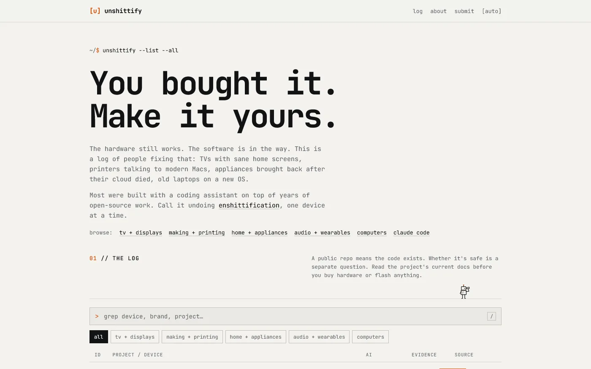
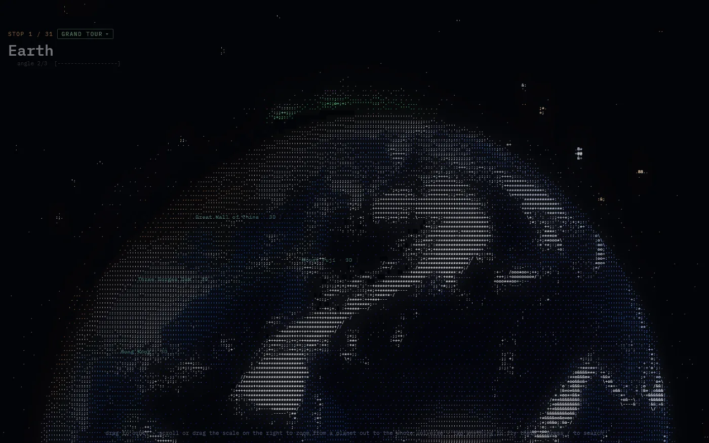
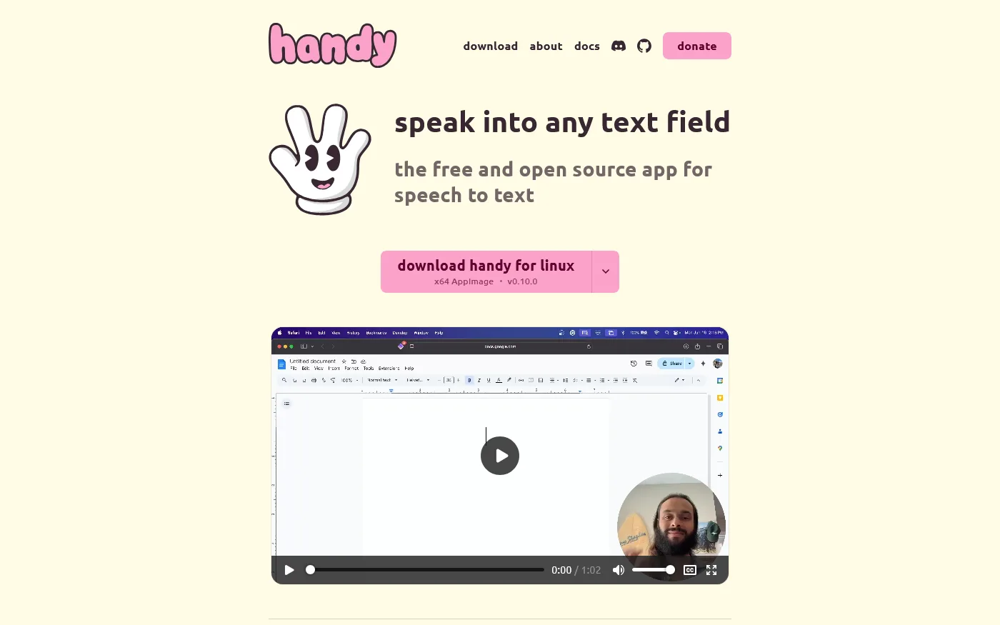

unshittify
A public log of people fixing hardware they already own, from TVs and printers to appliances and old laptops.
Website
Made by other people
Websites and projects by other people that I like.
3 sites

A public log of people fixing hardware they already own, from TVs and printers to appliances and old laptops.

